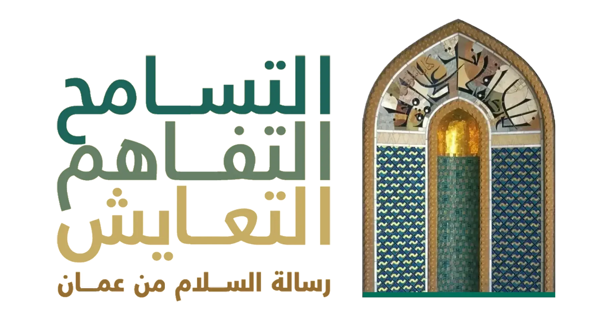
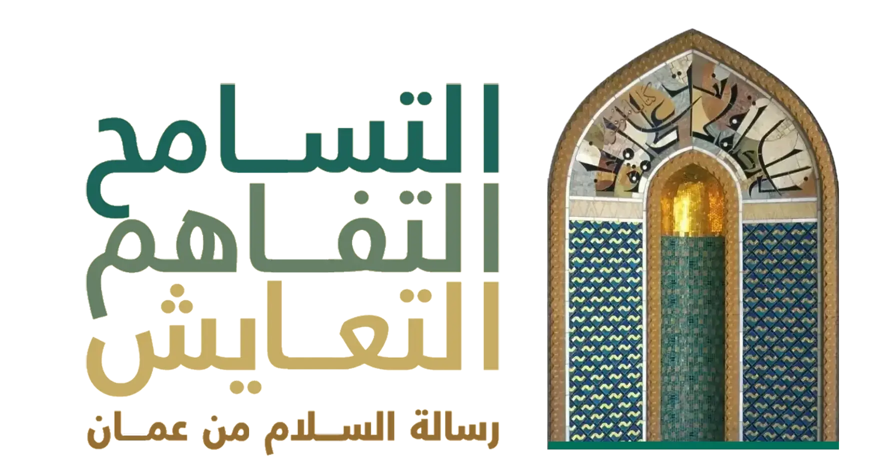
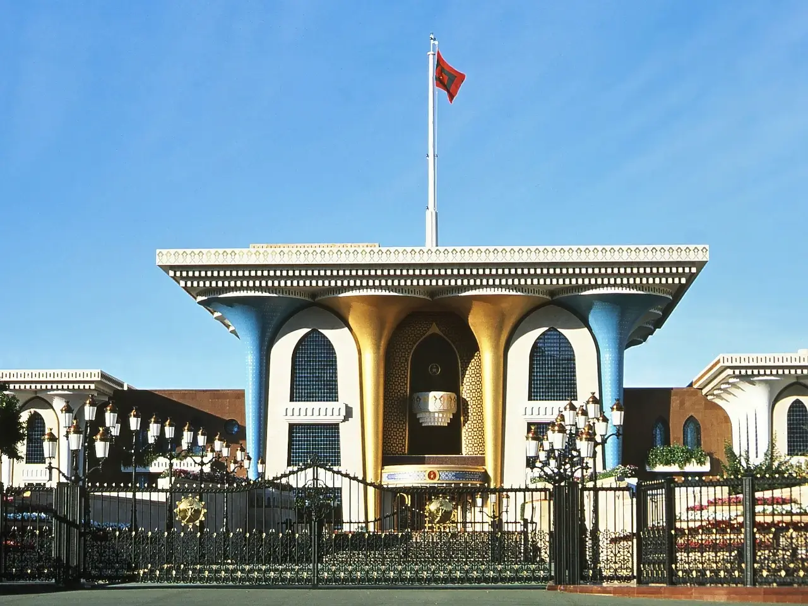

تهدف سياسة عمان الخارجية إلى علاقات حسن الجوار، وعدم التدخل في الشؤون الداخلية للدول الأخرى، والاعتراف بالقوانين والأعراف الدولية. كدولة غير منحازة، تسعى السلطنة إلى استغلال فرصها لتعزيز السلام.
بعض الأمثلة على الجهود الدبلوماسية لسلطنة عمان:
في عام 1990، استأنفت المملكة العربية السعودية وإيران علاقاتهما الدبلوماسية المضطربة، بعد وساطة قامت بها سلطنة عمان في مسقط.
إلى جانب السودان، كانت عمان الدولة الإسلامية الوحيدة التي لم تقطع علاقاتها الدبلوماسية مع جمهورية مصر العربية، بعد أن وقعت الأخيرة معاهدة كامب ديفيد للسلام بينها وبين إسرائيل. وفي يناير 1996، وقع ممثلون عن عمان وإسرائيل، اتفاقية لتأسيس مكتب للتمثيل التجاري في كل من مسقط وتل أبيب، وذلك لتطوير العلاقات بين البلدين. لكن، وبسبب التطورات السلبية بعد وفاة رئيس الوزراء إسحاق رابين عام 2000، قرر الجانب العماني تجميد العلاقات مع إسرائيل حتى تثبت إسرائيل نيتها الجادة لمواصلة عملية السلام.
بعد أيام قليلة من الهجمات الإرهابية في 11 سبتمبر / أيلول 2001، قال السلطان قابوس:
"إننا ندعم الإجراءات الدولية لمكافحة الإرهاب إذا لم تتعرض دولاً بعينها للخطر، ولم تتسبب تلك الإجراءات لجعل أبرياء يدفعون ثمن أفعال لا علاقة لهم بها، بغض النظر عن جنسياتهم أو أعراقهم."
كما ينتشر الدبلوماسيون العمانيون في جميع أنحاء العالم، للوساطة في حل الأزمات الدولية التي يكون فيها أطراف عربية أو إسلامية.
ربما كان أهم نجاح للدبلوماسية العمانية السرية في تسوية النزاعات حتى الآن، هو التقارب بين الولايات المتحدة وإيران لحل الخلافاات حول منشآت تخصيب اليورانيوم في أوائل أبريل 2015.
إن الالتزام المستمر بالحياد، والجهود المستمرة لنزع فتيل الصراعات في المنطقة كما في داخل الوطن، قد أتت ثمارها الآن بكل وضوح. فلا تزال عُمان ملاذًا للهدوء والاستقرار في شبه الجزيرة العربية.

تثقيف وتوعية الشباب مكافحة الإرهاب الدولي التسامح الديني عبر التاريخ التفاهم المتبادل بين المذاهب والأديان التسامح الديني في زنجبار
تفضلوا بزيارة معرض التسامح العالمي الافتراضي بلغتكم المفضلة